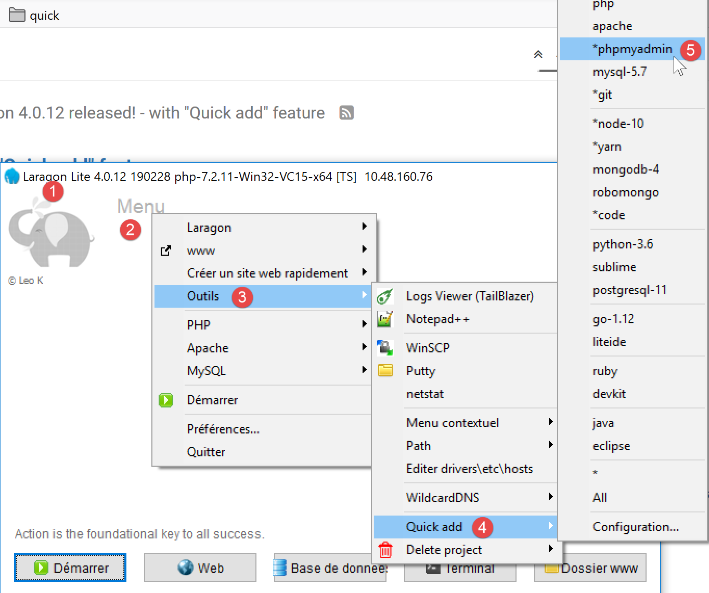
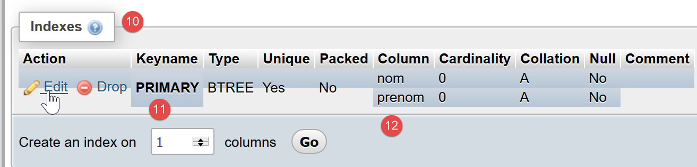
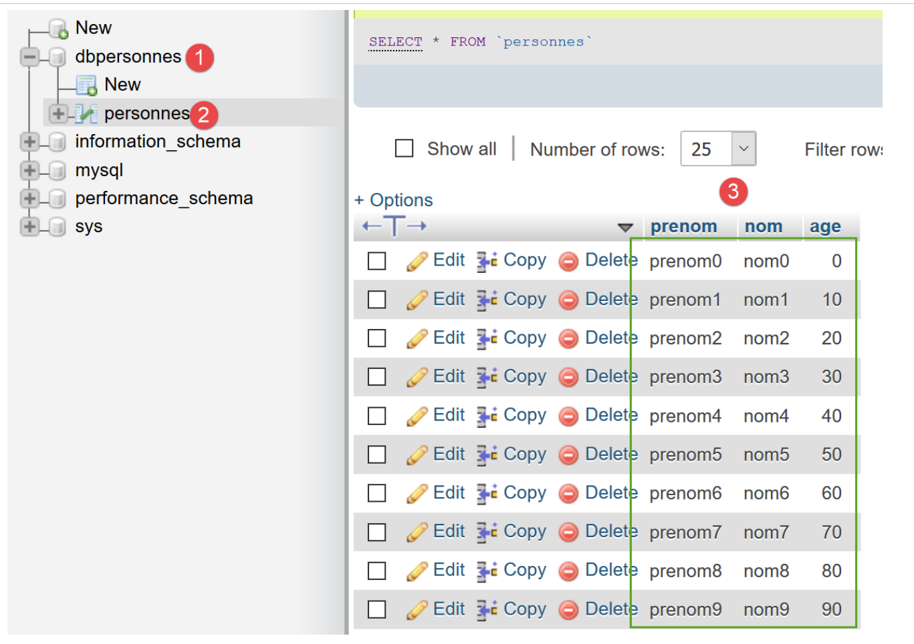

12. استخدام نظام إدارة قواعد البيانات MySQL

سنقوم الآن بكتابة نصوص PHP باستخدام قاعدة بيانات MySQL:

في البنية أعلاه، لا يتواصل البرنامج النصي PHP (1) مباشرة مع نظام إدارة قواعد البيانات (DBMS) (3). بل يتواصل مع وسيط يُسمى برنامج تشغيل نظام إدارة قواعد البيانات. يوفر PHP واجهة قياسية لهذه المحركات، وهي واجهة PDO (PHP Data Objects). يتم تنفيذ هذه الواجهة بواسطة فئات مختلفة مصممة خصيصًا لكل نظام إدارة قواعد البيانات: فئة واحدة لنظام إدارة قواعد البيانات MySQL، وأخرى لنظام إدارة قواعد البيانات PostgreSQL... لتبديل أنظمة إدارة قواعد البيانات، نقوم بتبديل المحركات:

يعمل برنامج تشغيل PDO على فصل البرنامج النصي لـ PHP (1) عن نظام إدارة قواعد البيانات (3، 6). ونظرًا لأن برامج التشغيل هذه تطبق واجهة قياسية، فقد يتوقع المرء أن يظل البرنامج النصي لـ PHP (1) دون تغيير عند الانتقال من نظام إدارة قواعد البيانات MySQL (3) إلى نظام إدارة قواعد البيانات PostgreSQL (6). في الواقع، هذا المثال المثالي غير موجود. في الواقع، للتواصل مع نظام إدارة قواعد البيانات، يرسل البرنامج النصي PHP أوامر SQL (لغة الاستعلام الهيكلية). هذه لغة تنفذها جميع أنظمة إدارة قواعد البيانات ولكنها غير كاملة. وبالتالي، أضافت أنظمة إدارة قواعد البيانات أوامر خاصة بها إليها. هذا هو السبب الرئيسي لعدم التوافق بين أنظمة إدارة قواعد البيانات. علاوة على ذلك، قد تختلف أنواع البيانات التي يمكن استخدامها في قواعد البيانات من نظام إدارة قواعد بيانات إلى آخر. على سبيل المثال، يدعم PostgreSQL نطاقًا أوسع بكثير من أنواع البيانات مقارنة بنظام إدارة قواعد البيانات MySQL. وهذا هو السبب الثاني لعدم التوافق. وهناك سبب آخر وهو التعامل مع المفاتيح الأساسية التلقائية (التي يتم إنشاؤها بواسطة نظام إدارة قواعد البيانات): فكل نظام إدارة قواعد البيانات تقريبًا له سياسته الخاصة. إلخ... هناك أسباب عديدة لعدم التوافق.
إذا كنت ترغب في تجنب إعادة كتابة البرنامج النصي PHP (1) عند التبديل من MySQL (3) إلى PostgreSQL (6)، فستحتاج عمومًا إلى إدراج طبقة جديدة بين البرنامج النصي PHP (1) ومحرك PDO (2، 5)، والتي سيكون دورها حل حالات عدم التوافق بين نظامي إدارة قواعد البيانات. ومع ذلك، في الحالات البسيطة التي سنواجهها، لن تكون هذه الطبقة الإضافية ضرورية.
سنستخدم الآن نظام إدارة قواعد البيانات MySQL. وهو مضمن في حزمة Laragon (انظر قسم الروابط).
إذا كان القارئ جديدًا على مفاهيم قواعد البيانات و SQL، فقد يجد الوثيقة [http://sergetahe.com/cours-tutoriels-de-programmation/cours-tutoriel-sql-avec-le-sgbd-firebird/] مفيدة. يستخدم هذا المستند نظام إدارة قواعد البيانات Firebird بدلاً من MySQL، لكنه يغطي أساسيات قواعد البيانات ولسان SQL. مثل MySQL، يقدم Firebird إصدارًا متاحًا مجانًا لا يستهلك سوى مساحة صغيرة من الذاكرة.
12.1. إنشاء قاعدة بيانات
سنوضح لك الآن كيفية إنشاء قاعدة بيانات ومستخدم MySQL باستخدام أداة Laragon.

- بمجرد تشغيله، يمكن إدارة Laragon [1] من خلال قائمة [2]؛
- في [3-5]، قم بتثبيت أداة إدارة MySQL [phpMyAdmin] إذا لم تكن مثبتة بالفعل؛

- في [6]، قم بتشغيل خادم الويب Apache ونظام إدارة قواعد البيانات MySQL؛
- في [7]، يتم تشغيل خادم Apache؛
- في [8]، يتم تشغيل خادم قاعدة بيانات MySQL؛

- في [8-10]، قم بإنشاء قاعدة بيانات باسم [dbpersonnes] [11]. سنقوم بإنشاء قاعدة بيانات للأشخاص؛

- في [11]، سنقوم بإدارة قاعدة البيانات التي أنشأناها للتو؛

- تقوم عملية [Databases] بإرسال طلب ويب إلى عنوان URL [http://localhost/phpmyadmin]. يستجيب خادم الويب Apache الخاص بـ Laragon. عنوان URL [http://localhost/phpmyadmin] هو عنوان URL الخاص بالأداة المساعدة [phpMyAdmin] التي قمنا بتثبيتها سابقًا [5]. تتيح لك هذه الأداة المساعدة إدارة قواعد بيانات MySQL؛
- بشكل افتراضي، بيانات تسجيل الدخول لمسؤول قاعدة البيانات هي: root [13] بدون كلمة مرور [14]؛

- في [16]، قاعدة البيانات التي أنشأناها سابقًا؛

- في الوقت الحالي، لدينا قاعدة بيانات [dbpersonnes] [17] فارغة [18]؛
نقوم بإنشاء مستخدم [admpersonnes] بكلمة مرور [nobody] سيكون له امتيازات كاملة على قاعدة البيانات [dbpersonnes]:

- في [19]، نحن موجودون في قاعدة البيانات [dbpersonnes]؛
- في [20]، نختار علامة التبويب [Privileges]؛
- في [21-22]، نلاحظ أن المستخدم [root] يتمتع بامتيازات كاملة على قاعدة البيانات [dbpersonnes]؛
- في [23]، نقوم بإنشاء مستخدم جديد؛

- في [25-26]، سيكون اسم المستخدم [admdbpersonnes]؛
- في [27-29]، ستكون كلمة المرور [nobody]؛
- في [30]، يُبلغ phpMyAdmin أن كلمة المرور ضعيفة جدًا (يسهل اختراقها). في بيئة الإنتاج، من الأفضل إنشاء كلمة مرور قوية باستخدام [31]؛
- في [32]، يُحدد أن المستخدم [admdbpersonnes] يجب أن يتمتع بامتيازات كاملة على قاعدة البيانات [dbpersonnes]؛
- في [33]، يتم التحقق من صحة المعلومات المقدمة؛

- في [35]، يشير phpMyAdmin إلى أنه تم إنشاء المستخدم؛
- في [36]، استعلام SQL الذي تم تنفيذه على قاعدة البيانات؛
- في [37]، يتمتع المستخدم [admpersonnes] بامتيازات كاملة على قاعدة البيانات [dbpersonnes]؛
الآن لدينا:
- قاعدة بيانات MySQL [dbpersonnes]؛
- مستخدم [admpersonnes/nobody] الذي يتمتع بحق الوصول الكامل إلى قاعدة البيانات هذه؛
سنكتب نصوص PHP للتفاعل مع قاعدة البيانات. تحتوي PHP على مكتبات متنوعة لإدارة قواعد البيانات. سنستخدم مكتبة PDO (PHP Data Objects)، التي تعمل كوسيط بين كود PHP ونظام إدارة قواعد البيانات (DBMS):

تسمح مكتبة PDO لبرنامج PHP النصي بأن ينأى بنفسه عن الطبيعة الدقيقة لنظام إدارة قواعد البيانات المستخدم. وبالتالي، كما هو موضح أعلاه، يمكن استبدال نظام إدارة قواعد البيانات MySQL بنظام إدارة قواعد البيانات PostgreSQL بأقل تأثير ممكن على كود برنامج PHP النصي. هذه المكتبة غير متوفرة بشكل افتراضي. يمكنك التحقق من توفرها على النحو التالي:

- في [1-4]، تحقق من ملحقات PDO النشطة؛
- في [5]، يمكنك أن ترى أن ملحق PDO لنظام إدارة قواعد البيانات MySQL نشط. أما الملحقات الأخرى فليست كذلك. ما عليك سوى النقر عليها لتنشيطها؛
هناك طريقة أخرى لتمكين ملحق وهي تعديل ملف [php.ini] (انظر الرابط) الذي يضبط إعدادات PHP مباشرةً:

- في [1]، تم تمكين ملحق MySQL PDO؛
- في [2]، تم تعطيل ملحق Firebird PDO؛
بعد تعديل ملف [php.ini]، يجب إعادة تشغيل PHP في Laragon حتى تصبح التغييرات سارية المفعول.
12.2. الاتصال بقاعدة بيانات MySQL
يتم الاتصال بنظام إدارة قواعد البيانات (DBMS) عن طريق إنشاء كائن PDO. يقبل المنشئ معلمات مختلفة:
المعلمات لها المعاني التالية:
$dsn | (اسم مصدر البيانات) هو سلسلة تحدد نوع نظام إدارة قواعد البيانات (DBMS) وموقعه على الإنترنت. تشير السلسلة "mysql:host=localhost" إلى أننا نتعامل مع نظام إدارة قواعد البيانات MySQL الذي يعمل على الخادم المحلي. قد تتضمن هذه السلسلة معلمات أخرى، مثل منفذ الاستماع لنظام إدارة قواعد البيانات واسم قاعدة البيانات التي نريد الاتصال بها: "mysql:host=localhost:port=3306:dbname=dbpersonnes"؛ |
$user | اسم المستخدم الذي يقوم بتسجيل الدخول؛ |
$passwd | كلمة المرور الخاصة به؛ |
$driver_options | مصفوفة من الخيارات لمحرك DBMS؛ |
المعلمة الأولى هي المطلوبة فقط. وسيكون الكائن الذي تم إنشاؤه بهذه الطريقة بمثابة الأساس لجميع العمليات التي يتم إجراؤها على قاعدة البيانات التي قمت بالاتصال بها. إذا تعذر إنشاء كائن PDO، يتم إلقاء استثناء PDOException.
فيما يلي مثال على اتصال [mysql-01.php]:
<?php
// connection to a local MySql database
// user identity is (admpersonnes,nobody)
const ID = "admpersonnes";
const PWD = "nobody";
const HOTE = "localhost";
try {
// connection
$dbh = new PDO("mysql:host=".HOTE, ID, PWD);
print "Connexion réussie\n";
// closing the connection
$dbh = NULL;
} catch (PDOException $e) {
print "Erreur : " . $e->getMessage() . "\n";
exit();
}
النتائج:
تعليقات
- السطر 11: يتم إنشاء الاتصال بنظام إدارة قواعد البيانات (DBMS) عن طريق إنشاء كائن PDO. يتم استخدام المنشئ هنا مع المعلمات التالية:
- سلسلة نصية تحدد نوع نظام إدارة قواعد البيانات (DBMS) وموقعه على الإنترنت. تشير السلسلة "mysql:host=localhost" إلى أننا نتعامل مع نظام إدارة قواعد بيانات MySQL يعمل على الخادم المحلي. لم يتم تحديد المنفذ، لذا يتم استخدام المنفذ 3306 افتراضيًا. كما لم يتم تحديد اسم قاعدة البيانات أيضًا. سيتم بعد ذلك إنشاء اتصال بنظام إدارة قواعد البيانات MySQL، على أن يتم اختيار قاعدة البيانات المحددة لاحقًا؛
- معرف المستخدم؛
- كلمة المرور الخاصة به؛
- السطر 14: يتم إغلاق الاتصال عن طريق إتلاف كائن PDO الذي تم إنشاؤه في البداية؛
- السطر 15: قد يفشل الاتصال بنظام إدارة قواعد البيانات. في هذه الحالة، يتم إلقاء استثناء PDOException. هذا الاستثناء مشتق من استثناء PHP [RuntimeException]؛
- السطر 16: يتم عرض رسالة خطأ الاستثناء؛
دعونا نعيد تشغيل البرنامج النصي عن طريق إدخال كلمة مرور غير صحيحة في السطر 6. والنتيجة هي كما يلي:
Erreur : SQLSTATE[HY000] [1045] Access denied for user 'admpersonnes'@'localhost' (using password: YES)
12.3. إنشاء جدول
يوضح البرنامج النصي [mysql-02.php] كيفية إنشاء جدول في قاعدة بيانات:
<?php
// database identity
const DSN = "mysql:host=localhost;dbname=dbpersonnes";
// user login
const ID = "admpersonnes";
const PWD = "nobody";
try {
// connection to the MySql database
$connexion = new PDO(DSN, ID, PWD);
// delete the people table if it exists
$sql = "drop table personnes";
$connexion->exec($sql);
// create people table
$sql = "create table personnes (prenom varchar(30) NOT NULL, nom varchar(30) NOT NULL, age integer NOT NULL, primary key(nom,prenom))";
$connexion->exec($sql);
} catch (PDOException $ex) {
// error display
print "Erreur : " . $ex->getMessage() . "\n";
} finally {
// disconnect if necessary
$connexion = NULL;
}
// end
print "Terminé\n";
exit;
تعليقات
- السطر 11: الاتصال بقاعدة البيانات. هذا هو دائمًا أول شيء يجب القيام به. نتيجة الاتصال هي كائن [PDO] سيتم من خلاله تنفيذ عمليات قاعدة البيانات؛
- السطر 13: سيؤدي الأمر SQL [drop table people] إلى حذف الجدول [people] من قاعدة البيانات [people_db]. إذا لم يكن الجدول [people] موجودًا، فلن يتسبب ذلك في حدوث خطأ؛
- السطر 14: تنفيذ عبارة SQL السابقة على قاعدة البيانات [dbpersonnes]. قد يؤدي هذا التنفيذ إلى ظهور استثناء [PDOException]، والذي سيتم التقاطه في السطر 18؛
- السطر 16: يقوم هذا الأمر SQL بإنشاء جدول باسم [people]. يتكون الجدول من صفوف وأعمدة. تشكل الأعمدة ما يُسمى ببنية الجدول. تشكل الصفوف محتوى الجدول. يمكن أن تحتوي قاعدة البيانات على جدول واحد أو أكثر. سيحتوي الجدول [people] على ثلاثة أعمدة:
- first_name: الاسم الأول للشخص كسلسلة من 30 حرفًا كحد أقصى؛
- last_name: اسم العائلة لنفس الشخص كسلسلة من 30 حرفًا كحد أقصى؛
- age: عمر الشخص كعدد صحيح؛
- تتطلب السمة NOT NULL في العمود أن يكون للعمود قيمة. يؤدي عدم توفير قيمة إلى ظهور [PDOException]؛
- [primary key(last_name,first_name)] يحدد مفتاحًا أساسيًا لجدول [people]. يحتوي المفتاح الأساسي على قيمة فريدة لكل صف في الجدول. هنا، يتم الحصول على المفتاح الأساسي عن طريق ربط عمودي [last_name] و [first_name] في الصف. يضمن هذا القيد أن الجدول لا يمكن أن يحتوي على شخصين يحملان نفس الاسم الأخير والاسم الأول — أي شخصين يحملان نفس الاسم. يؤدي إنشاء إدخال مكرر لشخص ما في الجدول إلى حدوث [PDOException]؛
- السطر 17: تنفيذ استعلام SQL على قاعدة البيانات [dbpersonnes]؛
- السطر 20: في حالة حدوث [PDOException]، يتم عرض رسالة الخطأ المرتبطة بها؛
- الأسطر 21-24: ندخل جملة [finally] في جميع الحالات، سواء حدث استثناء أم لا، لإغلاق اتصال قاعدة البيانات (السطر 23)؛
النتائج:
إذا تم تنفيذ البرنامج النصي دون أخطاء، يمكن رؤية الجدول في phpMyAdmin:


- في [3] قاعدة البيانات؛
- في [4]، يتم عرض الجدول؛
- في [5]، يتم عرض بنية الجدول في علامة التبويب [البنية]؛
- في [6-8]، الأعمدة الثلاثة للجدول؛
- في [9]، لا يمكن أن يكون أي من الأعمدة الثلاثة فارغًا؛

- في [10]، قائمة فهارس الجدول. يتيح لك الفهرس العثور على الصفوف في الجدول باستخدام فهرس محدد بشكل أسرع مما لو كنت تقوم بمسح صفوف الجدول بالتسلسل. يكون المفتاح الأساسي دائمًا جزءًا من الفهارس، ولكن قد لا يكون الفهرس مفتاحًا أساسيًا؛
- في [11]، الفهرس هو المفتاح الأساسي هنا؛
- في [12]، يتكون الفهرس من عمودي [last_name، first_name] في كل صف؛
الآن، دعونا نرى ماذا يحدث إذا قمنا بإنشاء أخطاء في اسم قاعدة البيانات واسم المستخدم وكلمة المرور، على التوالي:
إذا أدخلنا اسم قاعدة بيانات غير موجود:
Erreur : SQLSTATE[HY000] [1044] Access denied for user 'admpersonnes'@'%' to database 'dbpersonnes2'
إذا أدخلنا اسم مستخدم غير موجود:
Erreur : SQLSTATE[HY000] [1045] Access denied for user 'admpersonnes2'@'localhost' (using password: YES)
إذا تم إدخال كلمة مرور غير صحيحة:
Erreur : SQLSTATE[HY000] [1045] Access denied for user 'admpersonnes'@'localhost' (using password: YES)
12.4. ملء جدول
سنكتب برنامجًا نصيًا بلغة PHP يقوم بتنفيذ أوامر SQL الموجودة في الملف النصي التالي [creation.txt]:
تعليقات
- لغة الاستعلام الهيكلية (SQL) لا تميز بين الأحرف الكبيرة والصغيرة في أوامر SQL؛
- السطر 1: نقوم بإزالة الجدول [people] إذا كان موجودًا؛
- السطر 2: نخبر خادم MySQL أننا سنرسل إليه أحرفًا مشفرة بتنسيق UTF-8. هذا الأمر SQL الخاص بـ MySQL ضروري هنا، على سبيل المثال، لضمان ظهور الحرف "é" في Géraldine بشكل صحيح في قاعدة البيانات. إذا حذفنا السطر 2، فسيتم تحويل الحرف "é" إلى تسلسل من حرفين غريبين. العميل هو البرنامج النصي PHP المكتوب في NetBeans. يقوم هذا البرنامج النصي بترميز الملفات بـ UTF-8 [1-4] كما هو موضح أدناه:

- السطر 3: إنشاء جدول [people] بثلاثة أعمدة (first_name، last_name، age) والمفتاح الأساسي (last_name، first_name)؛
- الأسطر 4-10: إدراج 7 صفوف في جدول [people]؛
- السطر 6: يجب أن تفشل عبارة الإدراج هذه لأنها تحاول إجراء نفس الإدراج الموجود في السطر 5. يجب أن يمنع قيد المفتاح الأساسي هذا الإدراج: لا يمكن أن يكون لشخصين نفس الاسم الأول واسم العائلة؛
- السطر 10: يجب أن تفشل عبارة الإدراج هذه لأنها تحاول إجراء نفس الإدراج الموجود في السطر 9؛
فيما يلي النص البرمجي لـ PHP المسؤول عن تنفيذ أوامر SQL الواردة في هذا الملف النصي [mysql-03.php]:
<?php
// database identity
const DSN = "mysql:host=localhost;dbname=dbpersonnes";
// user login
const ID = "admpersonnes";
const PWD = "nobody";
// identity of the SQL command text file to be executed
const SQL_COMMANDS_FILENAME = "creation.txt";
// open database connection MySql
try {
$connexion = new PDO(DSN, ID, PWD);
} catch (PDOException $ex) {
// error display
print "Erreur : " . $ex->getMessage() . "\n";
exit;
}
// we want every SGBD error to trigger an exception
$connexion->setAttribute(PDO::ATTR_ERRMODE, PDO::ERRMODE_EXCEPTION);
// order file execution SQL
$erreurs = exécuterCommandes($connexion, SQL_COMMANDS_FILENAME, TRUE, FALSE);
// locking connection
$connexion = NULL;
//display number of errors
printf("\n-----------------------\nIl y a eu %d erreur(s)\n", count($erreurs));
for ($i = 0; $i < count($erreurs); $i++) {
print "$erreurs[$i]\n";
}
// it's over
print "Terminé\n";
exit;
// ---------------------------------------------------------------------------------
function exécuterCommandes(PDO $connexion, string $SQLFileName, bool $suivi = FALSE, bool $arrêt = TRUE): array {
// uses the $connexion connection
// executes the SQL commands contained in the SQLFileName text file
// this is a file of SQL commands to be executed one per line
// if $suivi=1 then each execution of a SQL order is displayed as a success or failure
// if $arrêt=1, the function stops on the 1st error encountered, otherwise it executes all sql commands
// the function returns an array (nb of errors, error1, error2...)
// check for the presence of the SQLFileName file
if (!file_exists($SQLFileName)) {
return ["Le fichier [$SQLFileName] n'existe pas"];
}
// execution of SQL queries contained in SQLFileName
// we put them in a table
$requêtes = file($SQLFileName);
// mistake?
if ($requêtes === FALSE) {
return ["Erreur lors de l'exploitation du fichier SQL [$SQLFileName]"];
}
// execute requests one by one - initially no errors
$erreurs = [];
$i = 0;
$fini = FALSE;
while ($i < count($requêtes) && !$fini) {
// retrieve the query text
// trim will remove the end-of-line marker
$requête = trim($requêtes[$i]);
// empty query?
if (strlen($requête) == 0) {
// ignore the request and move on to the next request
$i++;
continue;
}
try {
// query execution - an exception may be thrown
$connexion->exec($requête);
// screen tracking or not?
if ($suivi) {
print "$requête : Exécution réussie\n";
}
} catch (PDOException $ex) {
// an error has occurred
addError($erreurs, $requête, $ex->getMessage(), $suivi);
// shall we stop?
$fini = $arrêt;
}
// following request
$i++;
}
// result
return $erreurs;
}
function addError(array &$erreurs, string $requête, string $msg, bool $suivi): void {
// add an error msg
$msg = "$requête : Erreur (" . $msg . ")";
$erreurs[] = $msg;
// screen tracking or not?
if ($suivi) {
print "$msg\n";
}
}
تعليقات
- تتولى الدالة [executeCommands] (الأسطر 36–89) مسؤولية تنفيذ أوامر SQL الموجودة في الملف النصي [$SQLFileName] (المعلمة 2). ولتنفيذها، تستخدم الدالة الاتصال المفتوح [$connection] (المعلمة 1) بخادم MySQL. المعلمة الثالثة [$log] هي قيمة منطقية تتحكم في إخراج الشاشة: إذا كانت TRUE، يتم عرض عبارة SQL المنفذة على الشاشة مع نجاحها أو فشلها؛ وإلا، يتم تنفيذ عبارة SQL بصمت. تتحكم المعلمة الرابعة [$stop] في ما يجب فعله عند فشل أمر SQL: إذا كانت TRUE، فهذا يشير إلى أنه يجب إيقاف تنفيذ أوامر SQL؛ وإلا، يستمر التنفيذ. تُرجع الدالة [executeCommands] مصفوفة من رسائل الخطأ، وتكون فارغة في حالة عدم وجود أخطاء؛
- الأسطر 11-18: نفتح الاتصال بقاعدة بيانات MySQL [dbpersonnes]. إذا فشل فتح الاتصال، يتم عرض رسالة خطأ وتتوقف العملية (الأسطر 14-18)؛
- السطر 22: ثم نمرر اتصالاً مفتوحاً إلى دالة [executeCommands]. وسيتم إغلاقه عند عودة الدالة (السطر 24)؛
- السطر 20: قبل تمريرها إلى دالة [executeCommands]، يتم تكوين الاتصال. في حالة حدوث خطأ، يمكن أن تُرجع عمليات SQL التي تُجرى باستخدام كائن [PDO] إما القيمة المنطقية FALSE (القيمة الافتراضية) أو تُطلق استثناءً. ويختار السطر 20 الخيار الأخير. وبالفعل، من السهل «نسيان» التحقق من النتيجة المنطقية لتنفيذ أمر SQL. سيؤدي هذا في النهاية إلى حدوث خطأ في مكان آخر في الكود، مما يجعل من الصعب تتبعه إلى المصدر الأصلي. في حالة حدوث استثناء لم يتم التعامل معه (لا يوجد كتلة catch)، سينتشر الاستثناء عبر سلسلة الكود حتى يصادف كتلة catch أو يصل إلى مترجم PHP، الذي سيقوم باعتراض الاستثناء. في هذه الحالة، يتم عرض طبيعة الاستثناء ومصدره في الكود؛
- السطر 22: يتم استدعاء الدالة [executeCommands] لتنفيذ ملف أمر SQL [$SQLFileName]؛
- الأسطر 45-47: نتحقق من وجود ملف أوامر SQL بالفعل. إذا لم يكن موجودًا، نقوم بتسجيل الخطأ وإرجاع هذه النتيجة؛
- السطر 51: يتم وضع أوامر SQL في مصفوفة [$queries]. الأسطر 53-55: إذا فشلت العملية، يتم إرجاع مصفوفة أخطاء تحتوي على رسالة واحدة؛
- السطر 57: نقوم بتجميع الأخطاء في المصفوفة [$errors]؛
- السطر 58: رقم الاستعلام؛
- السطر 59: يتحكم المتغير المنطقي [$finished] في تنفيذ عبارات SQL الموجودة في المصفوفة [$queries]. عندما يصبح TRUE، يتوقف التنفيذ؛
- السطر 60: نقوم بتكرار جميع الاستعلامات؛
- السطر 63: نستخرج نص الأمر SQL #i. تزيل الدالة [trim] المسافات قبل وبعد نص الأمر SQL. ونقصد بـ "المسافات" حرف المسافة \b، وعودة الحامل \r، وتغذية السطر \n، وتغذية النموذج \f، وعلامة الجدولة \t... المهم هنا هو أن تغذية السطر في نص SQL ستتم إزالتها؛
- الأسطر 65–69: إذا كان نص SQL فارغًا، يتم تجاهل الاستعلام وننتقل إلى الاستعلام التالي؛
- السطر 72: نرسل أمر SQL إلى خادم MySQL. ستقوم طريقة [PDO::exec] بإلقاء استثناء إذا فشل التنفيذ. لاحظ أن هذا السلوك يرجع إلى التكوين المحدد في السطر 20؛
- السطر 79: تتم إضافة رسالة الخطأ إلى مصفوفة الأخطاء؛
- السطر 81: يتم تعيين المتغير المنطقي [$fini] الذي يتحكم في الحلقة. إذا كانت المعلمة [$arrêt] (السطر 36) هي TRUE، فيجب إيقاف الحلقة؛
- الأسطر 74-76: إذا تم تنفيذ عبارة SQL بنجاح، يتم عرضها على الشاشة إذا كانت المعلمة [$tracking] (السطر 36) TRUE؛
- السطر 87: بمجرد تنفيذ جميع عبارات SQL، يتم إرجاع مصفوفة الأخطاء [$errors]؛
تسمح الدالة [adError] في الأسطر 90-97 بإضافة خطأ إلى مصفوفة الأخطاء [$errors]:
- السطر 90: تأخذ الدالة 4 معلمات:
- يتم تمرير المعلمة [$errors] بالرجوع. وذلك لأننا نريد تعديل المصفوفة التي تم تمريرها كمعلمة، وليس نسخة منها؛
- المعلمة [$query] هي نص SQL للعبارة الفاشلة؛
- المعلمة [$msg] هي رسالة الخطأ المرتبطة بالاستعلام الفاشل؛
- تشير القيمة المنطقية [$log] إلى ما إذا كان يجب عرض رسالة الخطأ ($log=TRUE) أم لا ($log=FALSE) على وحدة التحكم؛
يتم استدعاء الدالة [executeCommands] بواسطة البرنامج النصي في الأسطر 3–33:
- الأسطر 11–18: يتم إنشاء اتصال بقاعدة بيانات MySQL [dbpersonnes]؛
- السطر 20: يتم تكوين الاتصال؛
- السطر 22: يتم بعد ذلك تنفيذ ملف أوامر SQL؛
- السطر 24: يتم إغلاق الاتصال؛
- الأسطر 26-29: عرض الأخطاء التي ترجعها الدالة [executeCommands]؛
إخراج الشاشة:
drop table if exists personnes : Exécution réussie
SET NAMES 'utf8' : Exécution réussie
create table personnes (prenom varchar(30) not null, nom varchar(30) not null, age integer not null, primary key (nom,prenom)) : Exécution réussie
insert into personnes (prenom, nom, age) values('Paul','Langevin',48) : Exécution réussie
insert into personnes (prenom, nom, age) values ('Sylvie','Lefur',70) : Exécution réussie
insert into personnes (prenom, nom, age) values ('Sylvie','Lefur',70) : Erreur (SQLSTATE[23000]: Integrity constraint violation: 1062 Duplicate entry 'Lefur-Sylvie' for key 'PRIMARY')
insert into personnes (prenom, nom, age) values ('Pierre','Nicazou',35) : Exécution réussie
insert into personnes (prenom, nom, age) values ('Géraldine','Colou',26) : Exécution réussie
insert into personnes (prenom, nom, age) values ('Paulette','Girond',56) : Exécution réussie
insert into personnes (prenom, nom, age) values ('Paulette','Girond',56) : Erreur (SQLSTATE[23000]: Integrity constraint violation: 1062 Duplicate entry 'Girond-Paulette' for key 'PRIMARY')
-----------------------
Il y a eu 2 erreur(s)
insert into personnes (prenom, nom, age) values ('Sylvie','Lefur',70) : Erreur (SQLSTATE[23000]: Integrity constraint violation: 1062 Duplicate entry 'Lefur-Sylvie' for key 'PRIMARY')
insert into personnes (prenom, nom, age) values ('Paulette','Girond',56) : Erreur (SQLSTATE[23000]: Integrity constraint violation: 1062 Duplicate entry 'Girond-Paulette' for key 'PRIMARY')
Terminé
السجلات التي تم إدراجها مرئية في phpMyAdmin:

12.5. تنفيذ عبارات SQL عشوائية
يوضح البرنامج النصي التالي تنفيذ عبارات SQL من الملف النصي التالي [sql.txt]:
من بين عبارات SQL هذه، هناك عبارة SELECT، التي تعرض نتائج من قاعدة البيانات؛ وعبارات INSERT و UPDATE و DELETE، التي تعدل قاعدة البيانات دون عرض نتائج؛ وأخيرًا، عبارات غير صالحة مثل العبارة الأخيرة (xselect). النص البرمجي [mysql-04.php] هو كما يلي:
<?php
// database identity
const DSN = "mysql:host=localhost;dbname=dbpersonnes";
// user login
const ID = "admpersonnes";
const PWD = "nobody";
// identity of the SQL command text file to be executed
const SQL_COMMANDS_FILENAME = "sql.txt";
try {
// connection to the MySql database
$connexion = new PDO(DSN, ID, PWD);
} catch (PDOException $ex) {
// error display
print "Erreur : " . $ex->getMessage() . "\n";
exit;
}
// we want every SGBD error to trigger an exception
$connexion->setAttribute(PDO::ATTR_ERRMODE, PDO::ERRMODE_EXCEPTION);
// order file execution SQL
$erreurs = exécuterCommandes($connexion, SQL_COMMANDS_FILENAME, TRUE, FALSE);
// locking connection
$connexion = NULL;
//display number of errors
printf("\n-----------------------\nIl y a eu %d erreur(s)\n", count($erreurs));
for ($i = 0; $i < count($erreurs); $i++) {
print "$erreurs[$i]\n";
}
// it's over
print "Terminé\n";
exit;
// ---------------------------------------------------------------------------------
function exécuterCommandes(PDO $connexion, string $SQLFileName, bool $suivi = FALSE, bool $arrêt = TRUE): array {
………………………………………………………….
// execute requests one by one - initially no errors
$erreurs = [];
$i = 0;
$fini = FALSE;
while ($i < count($requêtes) && !$fini) {
// retrieve the query text
// trim will remove the end-of-line marker
$requête = trim($requêtes[$i]);
// empty query?
if (strlen($requête) == 0) {
// ignore the request and move on to the next request
$i++;
continue;
}
// query execution
// we retrieve its name
$commande = "";
if (preg_match("/^\s*(\S+)/", $requête, $champs)) {
$commande = strtolower($champs[0]);
}
try {
// is this a SELECT order?
if ($commande === "select") {
$résultat = $connexion->query($requête);
} else {
$résultat = $connexion->exec($requête);
}
// screen tracking or not?
if ($suivi) {
print "[$requête] : Exécution réussie\n";
}
// the result of execution is displayed
afficherInfos($commande, $résultat);
} catch (PDOException $ex) {
// an error has occurred
addError($erreurs, $requête, $ex->getMessage(), $suivi);
// shall we stop?
$fini = $arrêt;
}
// following request
$i++;
}
// result
return $erreurs;
}
function addError(array &$erreurs, string $requête, string $msg, bool $suivi): void {
…
}
// ---------------------------------------------------------------------------------
function afficherInfos(string $commande, $résultat): void {
// displays the $résultat result of an sql query
// was it a select?
switch ($commande) {
case "select" :
// displays field names
$titre = "";
$nbColonnes = $résultat->columnCount();
for ($i = 0; $i < $nbColonnes; $i++) {
$infos = $résultat->getColumnMeta($i);
$titre .= $infos['name'] . ",";
}
// remove the last character ,
$titre = substr($titre, 0, strlen($titre) - 1);
// displays the list of fields
print "$titre\n";
// dividing line
$séparateurs = "";
for ($i = 0; $i < strlen($titre); $i++) {
$séparateurs .= "-";
}
print "$séparateurs\n";
// data
foreach ($résultat as $ligne) {
$data = "";
for ($i = 0; $i < $nbColonnes; $i++) {
$data .= $ligne[$i] . ",";
}
// remove the last character ,
$data = substr($data, 0, strlen($data) - 1);
// we display
print "$data\n";
}
break;
case "update":
case "insert":
case "delete";
print " $résultat lignes(s) a (ont) été modifiée(s)\n";
break;
}
}
تعليقات
- الأسطر 36–83: تم تعديل الدالة [executeCommands] بشكل طفيف: لا يتم تنفيذ الأمر SQL [select] بنفس الطريقة التي يتم بها تنفيذ أوامر SQL الأخرى. هذا الأمر هو الوحيد الذي يُرجع جدولًا كنتيجة، أي مجموعة من الصفوف والأعمدة من قاعدة البيانات؛
- الأسطر 55–57: نستخرج الكلمة الأولى من عبارة SQL باستخدام تعبير عادي؛
- الأسطر 60–64: إذا كان الأمر SQL هو [select]، يتم استخدام طريقة [PDO::query]؛ وإلا، يتم استخدام طريقة [PDO::exec] لتنفيذ الأمر SQL. في كلتا الحالتين، إذا فشل التنفيذ، يتم إلقاء استثناء ويتم التقاطه في الأسطر 71–77. إذا نجح التنفيذ، تعرض السطر 70 النتيجة؛
- الأسطر 90–130: تعرض الدالة displayInfo معلومات حول نتيجة تنفيذ أمر SQL؛
- السطر 94: نتعامل مع حالة [select]. والنتيجة هي كائن من النوع [PDOStatement]؛
- السطر 96: تُرجع الطريقة [PDOStatement::getColumnCount()] عدد الأعمدة في جدول نتائج الأمر select؛
- السطور 98–99: تُرجع الطريقة [PDOStatement::getMeta(i)] قاموسًا من المعلومات حول العمود i في جدول نتائج SELECT. في هذا القاموس، القيمة المرتبطة بمفتاح 'name' هي اسم العمود؛
- الأسطر 97–102: يتم ربط أسماء الأعمدة في جدول نتائج عبارة SELECT في سلسلة؛
- الأسطر 105-110: يتم إنشاء سطر فاصل بنفس طول السلسلة التي تم إنشاؤها مسبقًا؛
- الأسطر 112–121: يمكن تكرار كائن PDOStatement باستخدام حلقة foreach. في كل تكرار، يكون العنصر المُرجع هو صف من جدول نتائج SELECT في شكل مصفوفة من القيم تمثل قيم الأعمدة المختلفة للصف. يتم عرض كل هذه القيم باستخدام حلقة for (الأسطر 114–116)؛
- الأسطر 123–127: نتيجة تنفيذ عبارة الإدراج أو التحديث أو الحذف هي عدد الصفوف التي تم تعديلها بواسطة العبارة؛
عرض النتائج:
[set names 'utf8'] : Exécution réussie
[select * from personnes] : Exécution réussie
prenom,nom,age
--------------
Géraldine,Colou,26
Paulette,Girond,56
Paul,Langevin,48
Sylvie,Lefur,70
Pierre,Nicazou,35
[select nom,prenom from personnes order by nom asc, prenom desc] : Exécution réussie
nom,prenom
----------
Colou,Géraldine
Girond,Paulette
Langevin,Paul
Lefur,Sylvie
Nicazou,Pierre
[select * from personnes where age between 20 and 40 order by age desc, nom asc, prenom asc] : Exécution réussie
prenom,nom,age
--------------
Pierre,Nicazou,35
Géraldine,Colou,26
[insert into personnes values('Josette','Bruneau',46)] : Exécution réussie
1 lignes(s) a (ont) été modifiée(s)
[update personnes set age=47 where nom='Bruneau'] : Exécution réussie
1 lignes(s) a (ont) été modifiée(s)
[select * from personnes where nom='Bruneau'] : Exécution réussie
prenom,nom,age
--------------
Josette,Bruneau,47
[delete from personnes where nom='Bruneau'] : Exécution réussie
1 lignes(s) a (ont) été modifiée(s)
[select * from personnes where nom='Bruneau'] : Exécution réussie
prenom,nom,age
--------------
[insert into personnes values('Josette','Bruneau',46)] : Exécution réussie
1 lignes(s) a (ont) été modifiée(s)
[xselect * from personnes where nom='Bruneau'] : Erreur (SQLSTATE[42000]: Syntax error or access violation: 1064 You have an error in your SQL syntax; check the manual that corresponds to your MySQL server version for the right syntax to use near 'xselect * from personnes where nom='Bruneau'' at line 1)
-----------------------
Il y a eu 1 erreur(s)
[xselect * from personnes where nom='Bruneau'] : Erreur (SQLSTATE[42000]: Syntax error or access violation: 1064 You have an error in your SQL syntax; check the manual that corresponds to your MySQL server version for the right syntax to use near 'xselect * from personnes where nom='Bruneau'' at line 1)
Terminé
12.6. استخدام عبارات SQL المعدة مسبقًا
12.6.1. مثال 1
دعونا نفحص البرنامج النصي التالي [mysql-05.php]:
<?php
// database identity
const DSN = "mysql:host=localhost;dbname=dbpersonnes";
// user login
const ID = "admpersonnes";
const PWD = "nobody";
try {
// connection to the MySql database
$connexion = new PDO(DSN, ID, PWD);
// we want every SGBD error to trigger an exception
$connexion->setAttribute(PDO::ATTR_ERRMODE, PDO::ERRMODE_EXCEPTION);
// clear the table of people
$connexion->exec("delete from personnes");
// a list of people
$personnes = [];
$personnes[] = ["nom" => "Langevin", "prenom" => "Paul", "age" => 47];
$personnes[] = ["nom" => "Lefur", "prenom" => "Sylvie", "age" => 28];
// we'll put these people in the database
$statement = $connexion->prepare("insert into personnes (nom, prenom, age) values (:nom, :prenom, :age)");
for ($i = 0; $i < count($personnes); $i++) {
$statement->execute($personnes[$i]);
}
} catch (PDOException $ex) {
// error display
print "Erreur : " . $ex->getMessage() . "\n";
} finally {
// locking connection
$connexion = NULL;
}
// it's over
print "Terminé\n";
exit;
تعليقات
نركز هنا على الأسطر من 16 إلى 24، التي تضيف شخصين إلى جدول الأشخاص في قاعدة البيانات [dbpersonnes].
- السطر 21: نقوم بـ"تحضير" عبارة SQL معلمة. تسبق المعلمات الأحرف : :last_name، :first_name، :age. لـ"تحضير" عبارة SQL، نستخدم طريقة [PDO::prepare]. والنتيجة هي نوع [PDOStatement]. "التحضير" ليس تنفيذًا: لا يتم تنفيذ أي شيء؛
- السطر 23: تنفيذ العبارة "المُعدة" باستخدام طريقة [PDOStatement::execute]. للقيام بذلك، يجب تعيين قيم للمعلمات :last_name و:first_name و:age. هناك عدة طرق للقيام بذلك. هنا، نستخدم قاموسًا مفاتيحه هي معلمات العبارة المُعدة، والتي نمررها إلى طريقة [PDOStatement::execute]. هناك طريقة أخرى للقيام بذلك وهي تعيين قيمة للمعلمات باستخدام طريقة [PDOStatement::bindValue($parameter,$value)]. على سبيل المثال:
$statement→bindValue(“nom”,”Langevin”);
$statement→bindValue(“prenom”,”Paul”);
$statement→bindValue(“age”,47);
$statement→execute();
العيب هو أنه يتعين عليك تكرار هذه التعليمات لكل معلمة. لذا قد تكون طريقة القاموس أكثر ملاءمة. تُرجع طريقة [PDOStatement::execute] القيمة FALSE في حالة فشل التنفيذ؛
- الطريقة المستخدمة هنا لتنفيذ عمليات الإدراج:
- بيان مُعد مسبقًا؛
- n عمليات تنفيذ للعبارة المعدة مسبقًا؛
أكثر كفاءة من حيث وقت التنفيذ من تنفيذ n عبارات SQL مختلفة. لذلك يُفضل استخدام هذه الطريقة. يمكن استخدامها لعبارات SQL SELECT و UPDATE و DELETE و INSERT. في حالة عبارة SQL SELECT، بعد تنفيذها باستخدام [PDOStatement::execute]، يتم استرداد صفوف النتائج باستخدام طريقة [PDOStatement::fetchAll]؛
12.6.2. المثال 2
يوضح البرنامج النصي التالي [mysql-06.php] استخدام عبارة معدة مسبقًا لعملية SQL من نوع SELECT، بالإضافة إلى طرق مختلفة لاسترداد الصفوف التي ترجعها هذه العملية:
<?php
// database identity
const DSN = "mysql:host=localhost;dbname=dbpersonnes";
// user login
const ID = "admpersonnes";
const PWD = "nobody";
try {
// connection to the MySql database
$connexion = new PDO(DSN, ID, PWD);
// we want every SGBD error to trigger an exception
$connexion->setAttribute(PDO::ATTR_ERRMODE, PDO::ERRMODE_EXCEPTION);
// clear the table of people
$connexion->exec("delete from personnes");
// we'll put these people in the database
$statement = $connexion->prepare("insert into personnes (nom, prenom, age) values (:nom, :prenom, :age)");
for ($i = 0; $i < 10; $i++) {
$statement->execute(["nom" => "nom" . $i, "prenom" => "prenom" . $i, "age" => $i * 10]);
}
// query the database
$statement = $connexion->prepare("select nom, prenom, age from personnes");
$statement->execute();
// 1st line
$ligne = $statement->fetch();
var_dump($ligne);
// 2nd line
$ligne = $statement->fetch(PDO::FETCH_ASSOC);
var_dump($ligne);
// 3rd line
$ligne = $statement->fetch(PDO::FETCH_OBJ);
var_dump($ligne);
// 4th line
$statement->setFetchMode(PDO::FETCH_CLASS, "Person");
$ligne = $statement->fetch();
var_dump($ligne);
// sequential reading of all lines
$statement = $connexion->prepare("select nom, prenom, age from personnes");
$statement->execute();
$statement->setFetchMode(PDO::FETCH_CLASS, "Person");
while ($personne = $statement->fetch()) {
print "$personne\n";
}
} catch (PDOException $ex) {
// error display
print "Erreur : " . $ex->getMessage() . "\n";
} finally {
// locking connection
$connexion = NULL;
}
// it's over
print "Terminé\n";
exit;
class Person {
private $nom;
private $prenom;
private $age;
public function __toString() {
return "Personne[$this->nom,$this->prenom,$this->age]";
}
}
تعليقات
- الأسطر 17–20: نقوم بإدراج 10 صفوف في جدول [people] في قاعدة البيانات [admpersonnes]:

- السطر 22: نقوم بـ"إعداد" عبارة SQL [select] التي ننفذها في السطر 23؛
- السطر 25: نسترد صفًا من نتائج عملية [select] التي تم تنفيذها باستخدام طريقة [PDOStatement::fetch]. يمكن لطريقة [PDOStatement::fetch] استرداد صفوف نتائج عملية [select] المعدة مسبقًا بعدة طرق. ويوضح البرنامج النصي بعضًا منها. تُرجع طريقة [PDOStatement::fetch] بدون معلمات الصف الحالي لعملية [select] كقاموس مفهرس بأرقام الأعمدة وأسماء الأعمدة؛
- السطر 26: يعرض النتيجة التالية:
array(6) {
["nom"]=>
string(4) "nom0"
[0]=>
string(4) "nom0"
["prenom"]=>
string(7) "prenom0"
[1]=>
string(7) "prenom0"
["age"]=>
string(1) "0"
[2]=>
string(1) "0"
}
- السطران 28-29: يضمن المعامل [PDO::FETCH_ASSOC] أن يكون الصف الذي يتم إرجاعه عبارة عن قاموس مفهرس بأسماء أعمدة الجدول:
- السطران 31-32: تضمن المعلمة [PDO::FETCH_OBJ] أن يكون الصف الذي يتم إرجاعه كائنًا من نوع [stdclass] تكون سماته هي أسماء أعمدة الجدول:
- السطر 34: نقوم بتعيين وضع الاسترجاع لطريقة [fetch] باستخدام طريقة [PDOStatement::setFetchMode]. يصبح هذا الوضع هو الوضع الافتراضي حتى يتم تغييره إما بواسطة عملية [PDOStatement::setFetchMode] أخرى أو عن طريق تمرير وضع كمعلمة إلى طريقة [PDOStatement::fetch]، كما تم سابقًا. تشير العملية [setFetchMode(PDO::FETCH_CLASS, "Person")] إلى أن الصف الذي يتم قراءته يجب أن يوضع في كائن من النوع [Person]. يجب أن تحتوي هذه الفئة على سمات ضمن خصائصها تتطابق مع أسماء الأعمدة في الصف الذي يتم قراءته. وهذا هو الحال بالنسبة لفئة [Person] المحددة في الأسطر 56–63؛
- يعرض السطر 36 النتيجة التالية:
- الأسطر 38–43: توضح كيفية معالجة نتائج [select] بالتسلسل؛
- السطر 42: سيستخدم عرض [$person] طريقة [__toString] الخاصة بفئة [Person]؛
12.7. استخدام المعاملات
تسمح لك المعاملة بتجميع سلسلة من عبارات SQL في وحدة تنفيذ واحدة: إما أن تنجح جميع العبارات، أو تفشل إحداها، وفي هذه الحالة يتم التراجع عن جميع عبارات SQL التي تسبقها. بعبارة أخرى، عند استخدام معاملة لتنفيذ عبارات SQL، بعد اكتمال المعاملة، تكون قاعدة البيانات في حالة مستقرة:
- إما في حالة جديدة تم إنشاؤها من خلال التنفيذ الناجح لجميع عبارات SQL في المعاملة؛
- أو في الحالة التي كانت عليها قبل بدء تنفيذ المعاملة؛
سنعود إلى مثال تنفيذ عبارات SQL الموجودة في ملف نصي تمت مناقشته في القسم السابق. سنقوم بتضمين هذا التنفيذ ضمن معاملة. ستكون عبارات SQL موجودة في الملف [sql2.txt] التالي:
set names 'utf8'
select * from personnes
select nom,prenom from personnes order by nom asc, prenom desc
select * from personnes where age between 20 and 40 order by age desc, nom asc, prenom asc
insert into personnes values('Josette','Bruneau',46)
update personnes set age=47 where nom='Bruneau'
select * from personnes where nom='Bruneau'
delete from personnes where nom='Bruneau'
select * from personnes where nom='Bruneau'
insert into personnes values('Josette','Bruneau',46)
select * from personnes where nom='Bruneau'
xselect * from personnes where nom='Bruneau'
سيؤدي الترتيب غير الصحيح للسطر 12 إلى فشل المعاملة بأكملها. لذلك يجب أن تعود قاعدة البيانات إلى حالتها قبل المعاملة. في المثال أعلاه، يجب ألا يظهر الصف الذي تم إدراجه بواسطة السطر 10 في الجدول. لم يتغير البرنامج النصي إلا قليلاً. ومع ذلك، إليك الكود الكامل [mysql-07.php] مرة أخرى:
<?php
// database identity
const DSN = "mysql:host=localhost;dbname=dbpersonnes";
// user login
const ID = "admpersonnes";
const PWD = "nobody";
// identity of the SQL command text file to be executed
const SQL_COMMANDS_FILENAME = "sql2.txt";
try {
// connection to the MySql database
$connexion = new PDO(DSN, ID, PWD);
} catch (PDOException $ex) {
// error display
print "Erreur : " . $ex->getMessage() . "\n";
exit;
}
// we want every SGBD error to trigger an exception
$connexion->setAttribute(PDO::ATTR_ERRMODE, PDO::ERRMODE_EXCEPTION);
// order file execution SQL
$erreurs = exécuterCommandes($connexion, SQL_COMMANDS_FILENAME, TRUE);
// locking connection
$connexion = NULL;
//display number of errors
printf("\n-----------------------\nIl y a eu %d erreur(s)\n", count($erreurs));
for ($i = 0; $i < count($erreurs); $i++) {
print "$erreurs[$i]\n";
}
// it's over
print "Terminé\n";
exit;
// ---------------------------------------------------------------------------------
function exécuterCommandes(PDO $connexion, string $SQLFileName, bool $suivi = FALSE): array {
// uses the $connexion connection
// executes the SQL commands contained in the SQLFileName text file
// this is a file of SQL commands to be executed one per line
// SQL commands are executed in a transaction
// if one of the orders fails, the transaction is cancelled and the database is restored to its pre-transaction state
// if $suivi=1 then each execution of a SQL order is displayed as a success or failure
// the function returns an array (nb of errors, error1, error2...)
//
// check for the presence of the SQLFileName file
if (!file_exists($SQLFileName)) {
return ["Le fichier [$SQLFileName] n'existe pas"];
}
// execution of SQL queries contained in SQLFileName
// we put them in a table
$requêtes = file($SQLFileName);
// mistake?
if ($requêtes === FALSE) {
return ["Erreur lors de l'exploitation du fichier SQL [$SQLFileName]"];
}
// requests will be placed in a transaction
$connexion->beginTransaction();
// execute requests one by one - initially no errors
$erreurs = [];
$i = 0;
$fini = FALSE;
while ($i < count($requêtes) && !$fini) {
// retrieve the query text
// trim will remove the end-of-line marker
$requête = trim($requêtes[$i]);
// empty query?
if (strlen($requête) == 0) {
// ignore the request and move on to the next request
$i++;
continue;
}
// query execution
// we retrieve its name
$commande = "";
if (preg_match("/^\s*(\S+)/", $requête, $champs)) {
$commande = strtolower($champs[0]);
}
try {
// is this a SELECT order?
if ($commande === "select") {
$résultat = $connexion->query($requête);
} else {
$résultat = $connexion->exec($requête);
}
// screen tracking or not?
if ($suivi) {
print "[$requête] : Exécution réussie\n";
}
// the result of execution is displayed
afficherInfos($commande, $résultat);
} catch (PDOException $ex) {
// an error has occurred
addError($erreurs, $requête, $ex->getMessage(), $suivi);
// we stop at the next turn
$fini = TRUE;
}
// following request
$i++;
}
// end of transaction
if (!$fini) {
// no errors: transaction validated
$connexion->commit();
} else {
// there have been errors: the transaction is cancelled
$connexion->rollBack();
// add error
addError($erreurs, "", "Transaction annulée", $suivi);
}
// result
return $erreurs;
}
function addError(array &$erreurs, string $requête, string $msg, bool $suivi): void {
…
}
// ---------------------------------------------------------------------------------
function afficherInfos(string $commande, $résultat): void {
…
}
تعليقات
لقد قمنا بتمييز التغييرات التي أجريناها على النص الأصلي [mysql-04.php].
- السطران 22 و36: فقدت الدالة [executeCommands] المعلمة الرابعة [$stop=TRUE]. ويرجع ذلك إلى أن أوامر SQL تُنفَّذ ضمن معاملة، وبالتالي فإن أي خطأ سيؤدي إلى التراجع عن المعاملة؛
- السطران 40–41: استدعاء دالة المعاملة؛
- السطر 57: بدء معاملة. من هذه النقطة فصاعدًا، يتم تنفيذ أي أمر SQL يتم تنفيذه داخل الحلقة في الأسطر 62–99 ضمن هذه المعاملة؛
- الأسطر 101–109: تكون القيمة المنطقية [$fini] TRUE في حالة حدوث خطأ (السطر 95). عندما تكون FALSE، لا تحدث أخطاء، ويتم تثبيت المعاملة (السطر 103). عندما تكون TRUE، تحدث أخطاء، لذا يتم التراجع عن المعاملة (السطر 106) ويتم إضافة خطأ المعاملة إلى قائمة الأخطاء (السطر 108)؛
النتائج
قبل تشغيل البرنامج النصي، تكون قاعدة البيانات [admpersonnes] في الحالة التالية:

نقوم بتشغيل البرنامج النصي [mysql-07.php]. ويكون إخراج الشاشة كما يلي:
[set names 'utf8'] : Exécution réussie
[select * from personnes] : Exécution réussie
prenom,nom,age
--------------
prenom0,nom0,0
prenom1,nom1,10
prenom2,nom2,20
prenom3,nom3,30
prenom4,nom4,40
prenom5,nom5,50
prenom6,nom6,60
prenom7,nom7,70
prenom8,nom8,80
prenom9,nom9,90
[select nom,prenom from personnes order by nom asc, prenom desc] : Exécution réussie
nom,prenom
----------
nom0,prenom0
nom1,prenom1
nom2,prenom2
nom3,prenom3
nom4,prenom4
nom5,prenom5
nom6,prenom6
nom7,prenom7
nom8,prenom8
nom9,prenom9
[select * from personnes where age between 20 and 40 order by age desc, nom asc, prenom asc] : Exécution réussie
prenom,nom,age
--------------
prenom4,nom4,40
prenom3,nom3,30
prenom2,nom2,20
[insert into personnes values('Josette','Bruneau',46)] : Exécution réussie
1 lignes(s) a (ont) été modifiée(s)
[update personnes set age=47 where nom='Bruneau'] : Exécution réussie
1 lignes(s) a (ont) été modifiée(s)
[select * from personnes where nom='Bruneau'] : Exécution réussie
prenom,nom,age
--------------
Josette,Bruneau,47
[delete from personnes where nom='Bruneau'] : Exécution réussie
1 lignes(s) a (ont) été modifiée(s)
[select * from personnes where nom='Bruneau'] : Exécution réussie
prenom,nom,age
--------------
[insert into personnes values('Josette','Bruneau',46)] : Exécution réussie
1 lignes(s) a (ont) été modifiée(s)
[select * from personnes where nom='Bruneau'] : Exécution réussie
prenom,nom,age
--------------
Josette,Bruneau,46
[xselect * from personnes where nom='Bruneau'] : Erreur (SQLSTATE[42000]: Syntax error or access violation: 1064 You have an error in your SQL syntax; check the manual that corresponds to your MySQL server version for the right syntax to use near 'xselect * from personnes where nom='Bruneau'' at line 1)
[] : Erreur (Transaction annulée)
-----------------------
Il y a eu 2 erreur(s)
[xselect * from personnes where nom='Bruneau'] : Erreur (SQLSTATE[42000]: Syntax error or access violation: 1064 You have an error in your SQL syntax; check the manual that corresponds to your MySQL server version for the right syntax to use near 'xselect * from personnes where nom='Bruneau'' at line 1)
[] : Erreur (Transaction annulée)
Terminé
- السطر 53: حدث خطأ في الأمر [xselect]؛
- السطر 54: يتم بعد ذلك التراجع عن المعاملة؛
إذا تحققنا من حالة قاعدة البيانات، نجدها في نفس الحالة التي كانت عليها قبل تنفيذ البرنامج النصي. وعلى وجه الخصوص، لا نرى الصف [Josette, Bruneau, 46] من السطر 52 في النتائج أعلاه.
ملخص
- تبدأ المعاملة باستخدام طريقة [PDO::beginTransaction]؛
- ويتم تثبيتها عند النجاح باستخدام طريقة [PDO::commit]؛
- ويتم إنهاؤها عند الفشل باستخدام طريقة [PDO::rollback]؛
عند العمل مع قاعدة بيانات، من الأفضل وضع جميع عمليات SQL ضمن معاملة لعزلها عن مستخدمي قاعدة البيانات الآخرين (وهذا هو الغرض منها أيضًا). يجب أن تكون المعاملة قصيرة قدر الإمكان. لذلك، لا تنسَ إنهاءها باستخدام [commit] أو [rollback] حسب الاقتضاء.